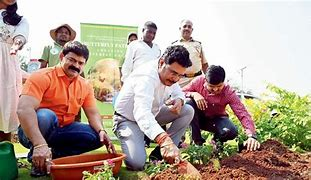
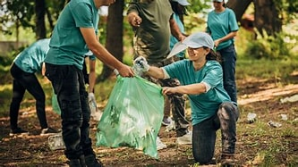
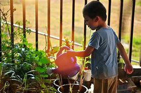
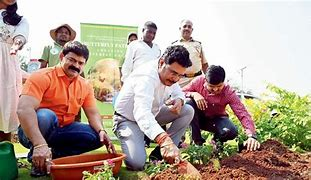
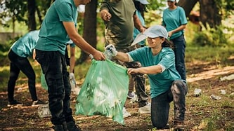
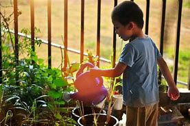

1.Reduce, Reuse, Recycle
Reduce: Minimize waste by buying only what you need and opting for products with minimal packaging.
Reuse: Use items multiple times instead of discarding them after a single use.
Recycle: Sort and recycle paper, plastic, metal, and glass to reduce waste in landfills.
2. Conserve Water
Fix leaky faucets and pipes.
Use water-efficient appliances and fixtures.
Practice mindful water usage, such as turning off taps while brushing teeth.
3. Energy Efficiency
Use energy-efficient appliances and LED bulbs.
Switch to renewable energy sources like solar or wind power.
Turn off lights, electronics, and appliances when not in use.
4. Protect Natural Resources
Avoid overexploitation of forests, fisheries, and minerals.
Support sustainable practices in agriculture, forestry, and fishing.
Plant trees and support reforestation projects.
5. Adopt Sustainable Transportation
Use public transport, cycle, or walk whenever possible.
Carpool or use fuel-efficient vehicles.
Transition to electric or hybrid vehicles.
6. Reduce Pollution
Avoid single-use plastics; use biodegradable alternatives.
Properly dispose of hazardous waste like batteries and electronics.
Support industries and companies that practice eco-friendly manufacturing.
7. Protect Wildlife and Biodiversity
Support wildlife conservation projects.
Avoid products made from endangered species.
Respect natural habitats by minimizing human interference.
8. Promote Eco-Friendly Practices
Support sustainable farming and organic products.
Avoid overusing chemical fertilizers and pesticides.
Compost organic waste to enrich the soil naturally.
9. Raise Awareness
Educate yourself and others about the importance of conservation.
Participate in and organize community cleanups and tree-planting events.
Advocate for stronger environmental policies and regulations.
10. Limit Carbon Footprint
Consume less meat and dairy; opt for plant-based diets.
Buy local products to reduce transportation emissions.
Offset your carbon footprint by supporting carbon capture or renewable energy projects